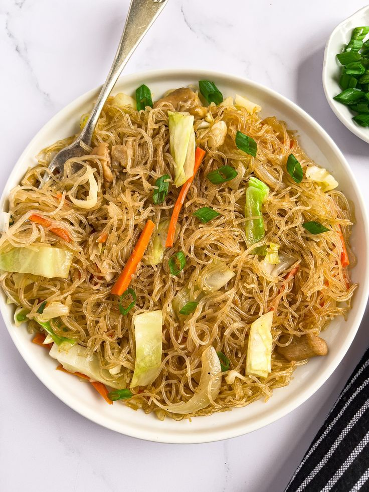

Pancit

Ingredients:
- 500g rice noodles
- 200g chicken breast, shredded
- 1 cup shrimp
- 1 carrot, julienned
- 1 cup cabbage, shredded
- 1 onion, sliced
- 3 cloves garlic, minced
- 1/4 cup soy sauce
Steps:
- Soak noodles in water until softened, then drain.
- Heat oil in a pan and sauté garlic and onion.
- Add chicken and shrimp, then cook until done.
- Add carrots and cabbage, and stir-fry for 3 minutes.
- Add noodles and soy sauce. Mix well and cook for another 5 minutes.
- Serve hot.